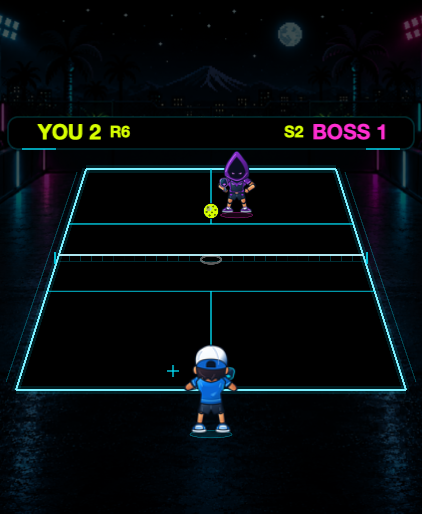
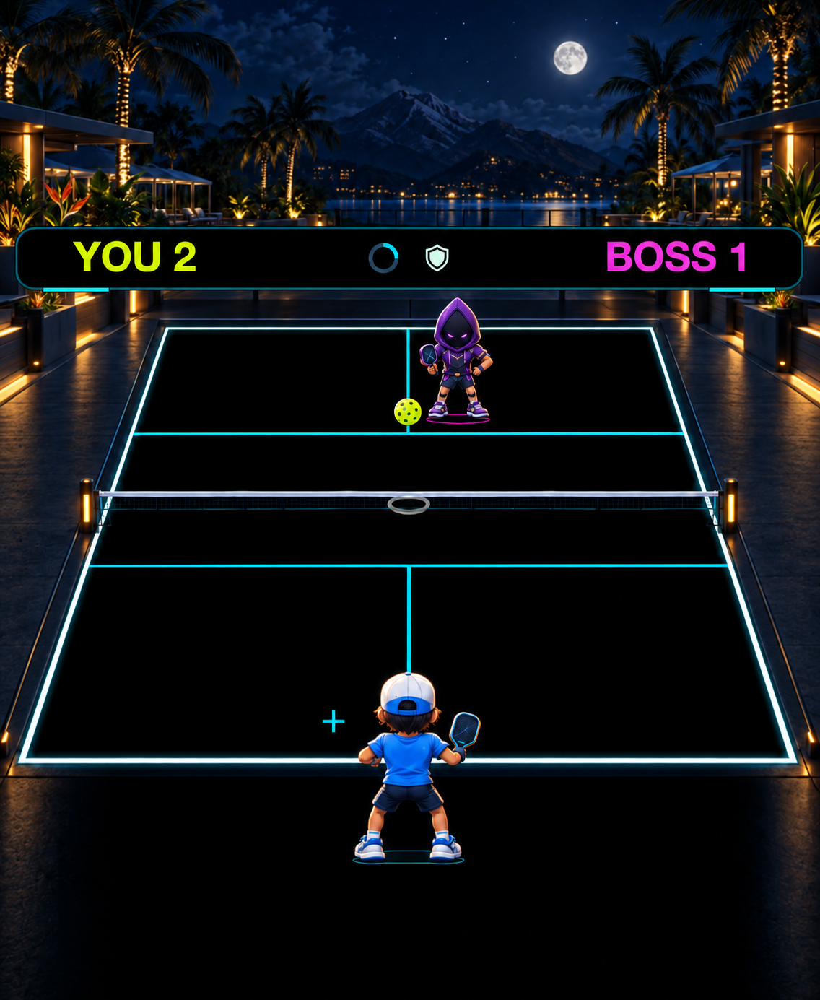
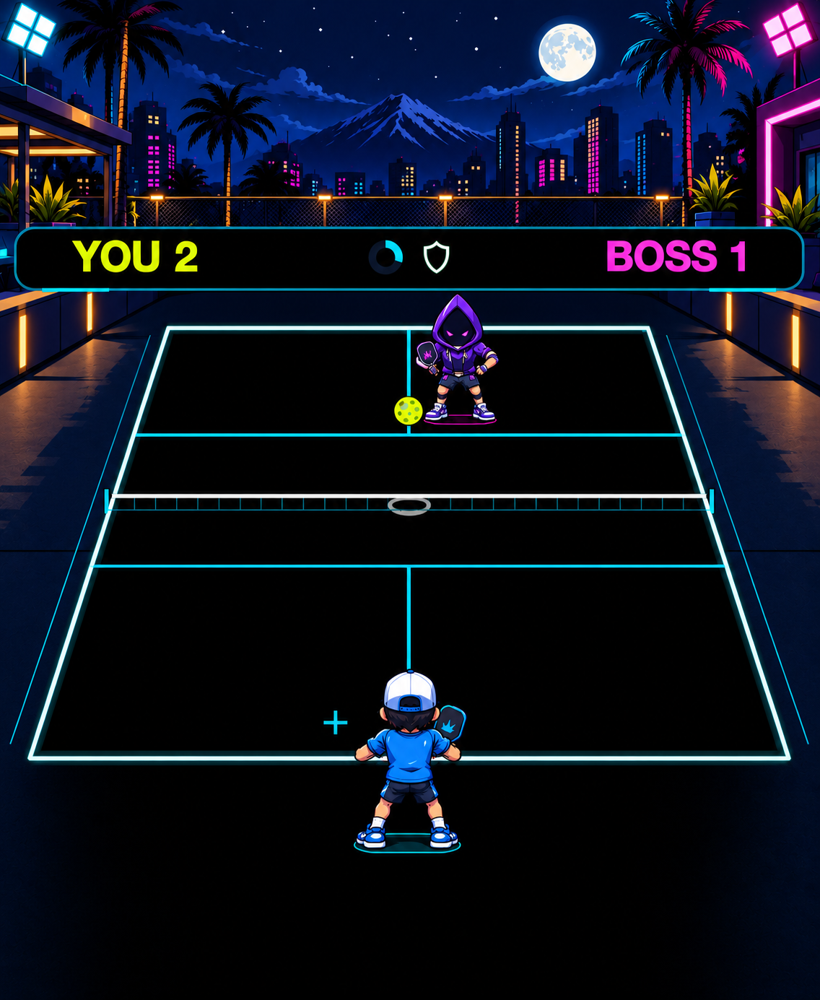
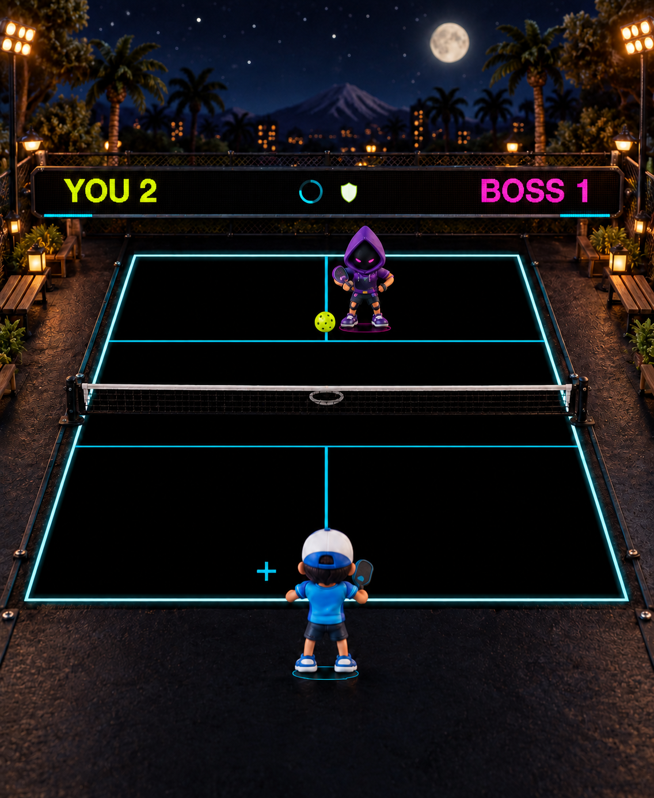
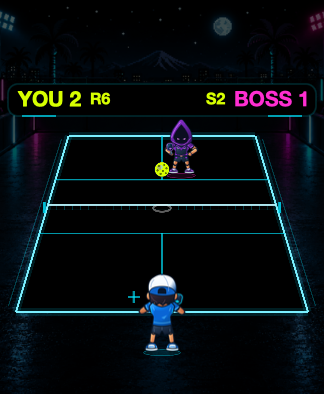

Actual build 6
Current shared SpriteKit renderer. MacOS fixture; not physical Watch evidence.

A new art direction changes the athletes, equipment, materials, lighting and setting. These options go beyond court-line polish while keeping the playing surface quiet and readable.
They are not engine screenshots, finished animation packs or performance measurements. The baseline images are ACTUAL IN-ENGINE build 6 macOS SpriteKit fixture captures. The Watch remains on build 6; no concept has been installed.
The concepts remove obsolete R/S text counters and sketch a quiet progress ring and shield. This is a HUD concept; the playable milestone HUD is being implemented and verified separately.
The same representative Lobber rally guides all three concepts. Large previews occupy 211 × 257 CSS pixels. Generated geometry and poses are approximate; the engine reference remains authoritative.
Current shared SpriteKit renderer. MacOS fixture; not physical Watch evidence.

Dimensional painted-toon athletes, localized warm/cool light, premium resort setting.

Broad two-tone forms, crisp silhouettes and athletic equipment. Recommended first playable proof.

Tactile sculpted athletes and miniature arena staging. Most distinctive materials; most clutter risk.

Every complete concept is displayed at 162 × 197 CSS pixels. This is a static reduction, not a separately reflowed or animated small-Watch capture. The baseline at left uses its actual small viewport. Browser zoom and display density affect physical size. Tiny faces remain tiny: silhouette, cap/hood/paddle edges and color grouping matter most.
Current shared SpriteKit renderer. MacOS fixture; not physical Watch evidence.

Dimensional painted-toon athletes, localized warm/cool light, premium resort setting.
Broad two-tone forms, crisp silhouettes and athletic equipment. Recommended first playable proof.
Tactile sculpted athletes and miniature arena staging. Most distinctive materials; most clutter risk.
Recommendation: B — Cel Sports Comic. Its stronger two-tone shapes and clean cap, hood and paddle silhouettes are the best starting point for tiny-screen readability. This is an art judgment, not proven Watch performance. A has the richest premium atmosphere. C has the most distinctive tactile materials, with the most detail to simplify.
| Direction | What improves | What must be controlled |
|---|---|---|
| A · Painted Tournament | Dimensional athletes, sculpted paddles, baked warm/cool rim light, resort architecture. | Fine materials disappear at 40 mm; surrounding lights must stay below the ball's visual priority. |
| B · Cel Sports Comic | Hand-inked silhouettes, broad two-tone forms, graphic sporting equipment and urban staging. | Bright background elements need restraint. Retain the current player footprint and contact contract. |
| C · Miniature Diorama | Clay/resin-like sculpted athletes, tactile props, miniature timber/metal court surround. | Net mesh and warm granular ground are the most likely to compete with the ball. Bake the look into 2D assets. |
Keep the procedural RGB(0,0,0) court, regulation lines, authoritative ball/cues, character footprints, contact planes, connected paddles and animation timestamps. Generated art is not an exact-RGB or geometry guarantee. Do not use a whole concept screenshot as the runtime background; extract/re-author separated assets in the selected style.
Original concept art generated with the built-in image tool from the actual build 6 Lobber fixture, followed by targeted HUD and style refinements. No third-party artwork or runtime package was added. The final concept PNGs are embedded unchanged; this HTML scales their display without editing stored pixels.
Build 6 renderer reference: implementation 77d0062. Copyright © 2026 fcw1987. Project artwork remains governed by the PickleBlast asset license.
[
{
"filename": "a-painted-tournament-concept.png",
"width": 1136,
"height": 1385,
"bytes": 1349133,
"sha256": "4ad1ee1610e52642c9e68f301741636fc7a020f47841e8344c82956d957d953e",
"type": "concept"
},
{
"filename": "b-cel-sports-comic-concept.png",
"width": 1136,
"height": 1385,
"bytes": 1335635,
"sha256": "5b8c05d6f8a585dd162eee9b300f03fb959642fa32db9aa50e0630e5d33c0cca",
"type": "concept"
},
{
"filename": "build6-actual-large-lobber.png",
"width": 422,
"height": 514,
"bytes": 192642,
"sha256": "59fcc49c18ede78fb61ec12d3eee0e71f90178bcfab98e5e7164dad980ee0852",
"type": "actual_engine_fixture"
},
{
"filename": "build6-actual-small-lobber.png",
"width": 324,
"height": 394,
"bytes": 124199,
"sha256": "35ca39605da10342a84c45aaad01556891fbfa21cc4d519a03fc929f7ec79542",
"type": "actual_engine_fixture"
},
{
"filename": "c-miniature-diorama-concept.png",
"width": 1136,
"height": 1385,
"bytes": 1760237,
"sha256": "57b125b6284e8a2aea3dc9f19e8640feb96d97d348389c4ac04028f2ebf2480e",
"type": "concept"
}
]